Home
Discography
Merch
Discography
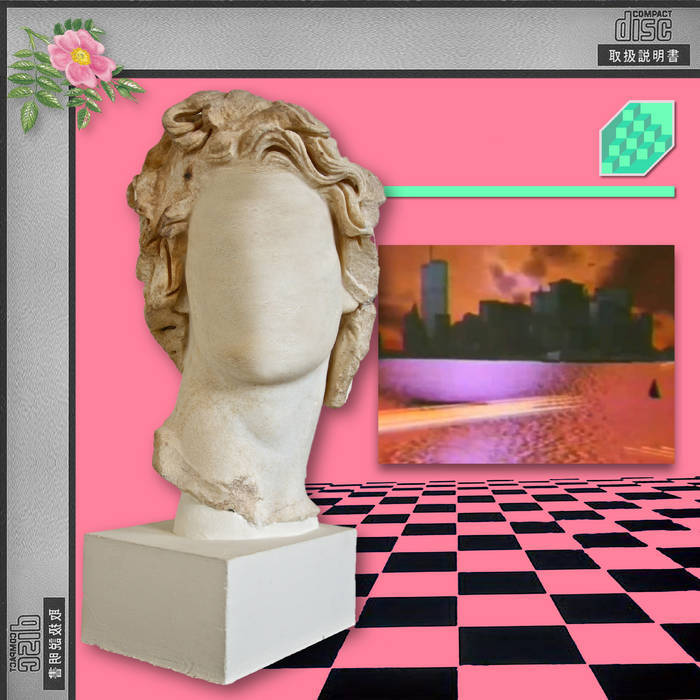
Floral Shoppe
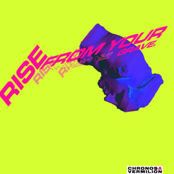
Sick & Panic
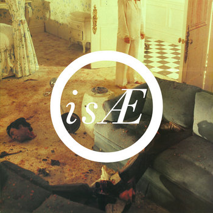
isÆ
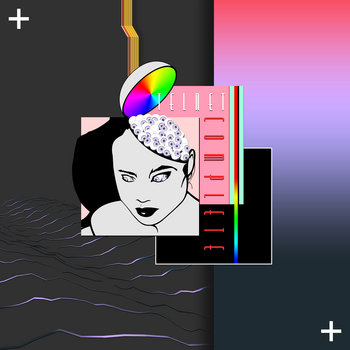
Telnet Complete
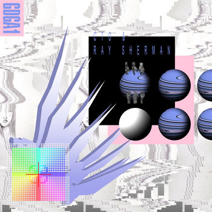
GDGA1
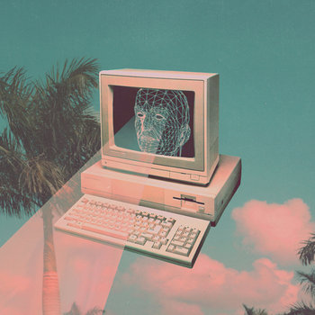
Neo Cali
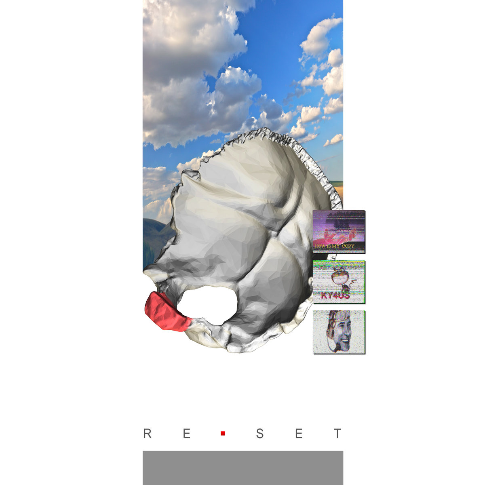
Re-Set
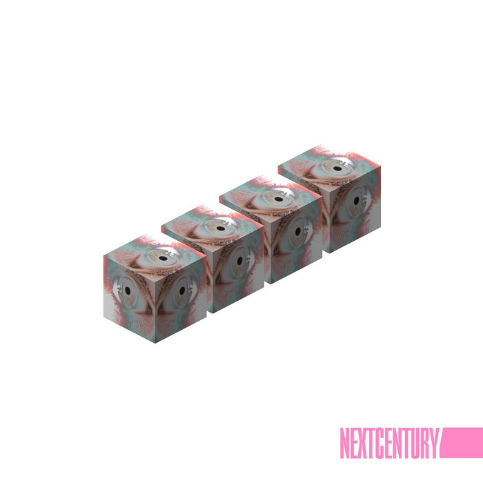
NextCentury
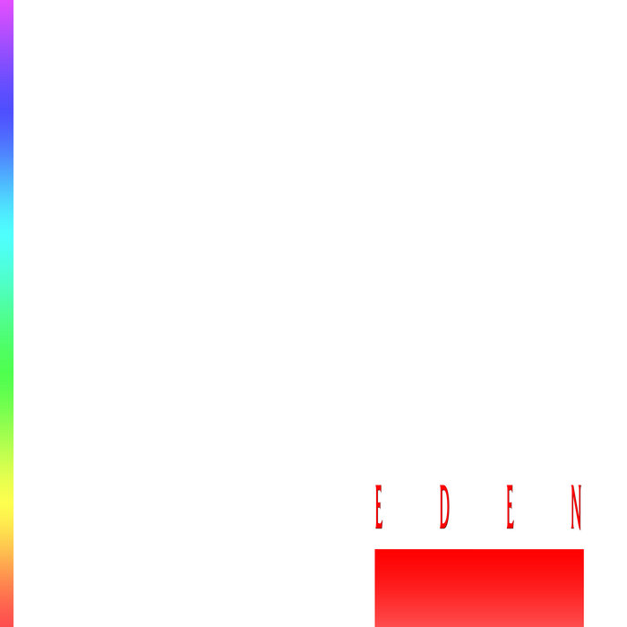
Eden
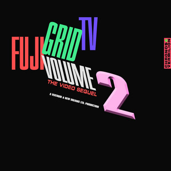
Fuji Grid TV II: EMX
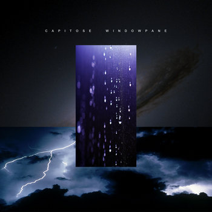
Capitose Windowpane
Color Ocean Road
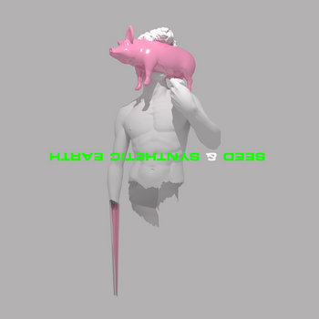
Seed & Synthetic Earth
 Color Ocean Road
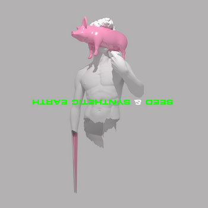
Seed & Synthetic Earth
Color Ocean Road
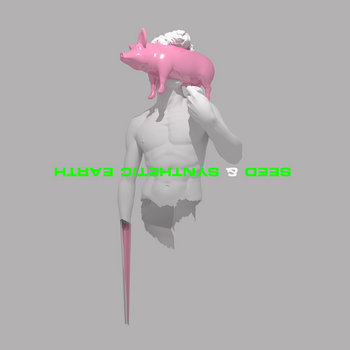
Seed & Synthetic Earth